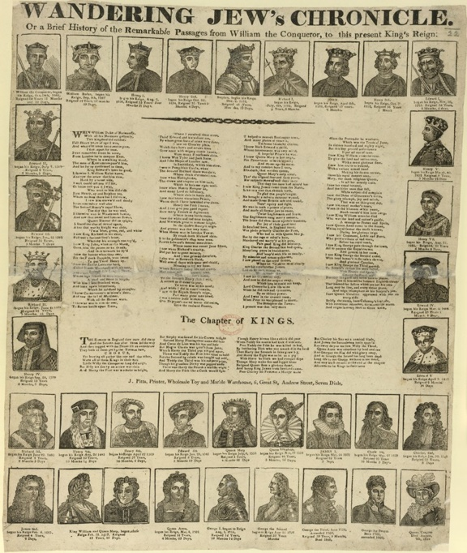
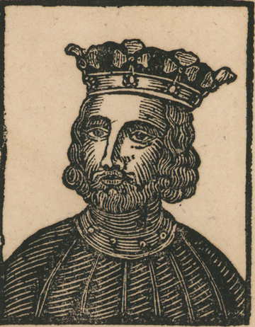

8. The ballad concludes
The last known edition of the Chronicle was printed and published by John Pitts, about whom more is known than any other publisher of the ballad. Apprenticed to John Marshall in Aldermary Churchyard, he was somewhat imaginatively described by R.S. Thomson as descending in 'a direct line [...] from the Ballad Partners who established a warehouse stock in 1625.'[1] By Pitts' time however, the kingdom had long been divided. He never ruled the marketplace as did the Ballad Partners or the Diceys, competing famously and fiercely in London with James Catnach and against scores of other producers across the British Isles.[2] J.1 is a characteristic Pitts broadside: somewhat larger and squarer than the broadsides of the preceding two centuries, it is printed with headlines set in a new-style typeface and illustrated with wood-engravings, a finer and more robust method of relief-printing than woodcuts.[3]

Fig. 24. Wandering Jew's Chronicle (J.1.2)

Fig. 25. A wood-engraving, from J.1.2
Pitts' text concludes with George IV while John Collins' 'The Chapter of Kings', a brisker narrative of the English monarchy than the now-elongated Chronicle, is also printed on the sheet.[4] The ballad exists in two bibliographical states that differ only marginally: the headlines are separate settings of the same text; there is some superfluous spacing in the imprint of J.1.2; and a printer's ornament has been substituted. These states may also be separate issues that, like the two G.1 issues, were printed from standing type, but separate issue is not indicated, as it is in the case of G.1, by an altered imprint.[5] Stemmatically, the text of the ballad's descent from the corrected (b-state) of I.2 is readily apparent from numerous agreements in each text when compared against I.1.
Why did the Chronicle tradition come to an end at this moment? As with the earlier peaks and troughs in publication, there are several possible explanations. New, topical ballads from the presses of Pitts and Catnach competed with the traditional songs in which no publisher could now hold a monopoly. Ballads had shifted further towards compact, economical formats such as slips, long-songs and songsters while more substantial texts for the learning of British history had also become available. The Wandering Jew's Chronicle, now competing with history-books in larger formats and with colour-printed games and toys, may have looked dowdy: a meagre curriculum and a ponderous entertainment.[6] The figure of the Wandering Jew would have seemed not so much miraculous as a staple, even hackneyed character. The Jews of England themselves were more numerous and progressively less discriminated against in law: their stereotypical representations gradually turned away from sacred history and, following developments in the new historical sciences of philology, anthropology and biology, towards the then-modern racial theory while still retaining ancestral traces of otherness and enmity.[7]
There remained a tiny antiquarian market for old ballads. Ballad printers were long accustomed to inquiries from collectors and scholarly editors such as James Boswell and Thomas Percy, and knew that old ballads were of interest to an educated market, but broadside texts were increasingly available in anthologies - indeed, those anthologies were sometimes used as sources by the broadside presses.[8] Percy's Reliques (1765) had differentiated the balladry of the past from that of the present - according to Percy, it had been in the keeping of successive minstrels within noble households - but this was also a social distinction between those readers able to afford this and other upmarket anthologies and the much larger market for broadsides and other cheap formats.[9] The hugely successful historical romances of Walter Scott, an enthusiastic collector of ballads, are one example of this brokering of elements of traditional songs into more rarefied and profitable niches within the modern literary marketplace.[10] A more ambiguous example is presented by John Clare the labouring-class poet, who recalled his childhood reading of ballads and chapbooks with mingled affection and shame, but who also delighted in their availability in the distinguished, antiquarian dress of the Reliques.[11]
The Wandering Jew's Chronicle is largely unmentioned within the privately-printed reference sources for the new sciences of folklore, linguistics, literature and history. The appeal of ballads for many antiquarians was purely retrospective, as historical sources. A relatively modern product of print that dealt largely in mundane historical facts (notwithstanding its fantastical narrator) The Wandering Jew's Chronicle was at best a primary source only of its own time. It was consequently of less interest than ballads of ancient or indeterminate origin to the period's collectors and antiquaries. It is cited in an 1839 scholarly edition of an English chronicle by the pioneering bibliographer and ballad-collector James Halliwell, but it was not reprinted until the Ballad Society's 1886 edition of the Roxburghe ballads, which were by then part of the national collection held by the British Museum.[12] This contains the first bibliography, as well as the first retrospective edition of the Chronicle: it reproduces the texts of C.2.(a) and H.6.(a) and noted the existence of H.4.(c), also in the Roxburghe collection; A.2.(a) and C.2.(a) in the Bodleian; and C.3.(a) in the Pepys Library. The text is sparsely annotated with historical notes by the editor J. W. Ebsworth, who asserted that the ballad was 'wholly devoid of all romantic interest, but once popular among the rabble.'[13]
His disdain apart, Ebsworth's belief that The Wandering Jew's Chronicle was popular is worth taking seriously. To recap, almost nothing is known about the Chronicle's reception other than through its collectors and revisers. Its wider public is indeterminate outside of the information already presented about the ballad's publication and descent, from which only the banal conclusion can be drawn that it was considered sufficiently popular by the ballad trade to reprint at certain times. Apart from Aubrey's anecdote, there is no performance history of the ballad, or evidence of oral transmission within the tradition itself. Admittedly, bibliography and textual scholarship are often blind to orality: bibliography is concerned with books, not realisations in other media, while the orthodox stemmatic method tends to weigh small textual errors more heavily than oral or literary improvisations. The stemma given in this commentary is based on a wider range of evidence than the propagation of errors alone, but it is not a map of the tradition as a whole in either its sources or onward circulation, nor does it define any units of communication other than a finished printed copy, which might include a printer's manuscript copy, or a compositor's memory of that or another copy. A strictly documentary history is inevitably incomplete, but if bibliography and textual scholarship can conjure the existence of lost versions, they might also conjecture that, since it was hardly published solely for the benefit of its future revisers and printers, oral performance of The Wandering Jew's Chronicle must have taken place.[14] So too might communication events such as scribal circulation, scrapbooking of the illustrations, reading or viewing. The bibliographical history provided in this edition is therefore only a partial (and possibly misleading) outline of a much larger pattern of transmission and reception, traffic and trade, appropriation and counter-appropriation- the 'sociology of the text', to adopt D.F. McKenzie's influential terminology.[15] Aubrey's positioning of Katherine Bushell's recitation of the Chronicle as the mother of only an obsolete model of history might be read alongside Susan Stewart's insight that 'Modern literary scholarship, with its tasks of genealogy - the establishment of paternity and lines of influence - and its role in the legislation of originality and authenticity, depended upon the articulation of a "folk" literature that "literature" was not.'[16]
No more literal task of genealogy exists than that embodied by the stemma diagram, about which its most vigorous twentieth-century advocate Paul Maas wrote that 'The image is taken from genealogy: the witnesses are related to the original somewhat as the descendants of a man are related to their ancestor. One might perhaps illustrate the transmission of errors along the same lines by treating all females as sources of error.'[17]
By contrast, R.S. Thomson's characterisation of the ballad over time is of a kind of sustained reaction within and between traditions:
'A geometric progression of great complexity which is complicated by constant accretions from outside in the form of newly created songs starting their process of re-creation and the persistent reinforcement of standardised broadside texts. The possibilities are bewildering.' [18]
Thomson's striking description, which eschews either origins or destinations, is a manifesto for ballad history to be preferred over a primordial origin-myth of balladry whose later manifestations require purification from the contamination of female gossip, old wives' tales and the promiscuous hybridisation of communications themselves. The same might be said of English history, for which the Chronicle offers a poor guide, but a revealing mythography.
Afterthoughts
This commentary has sought to document what is known about The Wandering Jew's Chronicle, while adding a few conjectures. The value of a largely documentary study is in part as a corrective to some of the persistent myths around ballads: that they were faultless embodiments of a national, linguistic or other traditional mentality; are meaningful only within the context of the time and place of their emergence; or were handed down through mysterious processes rather than through coherent actions by individuals, partnerships and trades who were jointly and severally motivated by profit, ideology and art. Randomness has also been a theme. The Chronicle is sufficiently distinctive to deserve a history of its own, but while the lineages and dependencies of this or any other tradition may certainly be clarified, they cannot, as Thomson realised, ever be definitively drawn. It is towards a discussion about the implications of this basic feature of human communications, in no way confined to ballads, that this commentary is directed.
[1] R.S. Thomson, 'Publisher's introduction: Madden Ballads from Cambridge University Library', (Gale, 1987), http://microformguides.gale.com/Data/Introductions/ 30330FM.htm (accessed 28 November 2013).
[2] Charles Hindley, The life and times of James Catnach, (Late of Seven Dials), Ballad Monger, (Reeves and Turner, 1878): digitised copy at http://dbooks.bodleian.ox.ac.uk/books/PDFs/600017451.pdf[accessed 22/9/2014].
[3] On the wood-engraving process, see Bamber Gascoigne, How to identify prints, (Thames and Hudson, 1995).
[4] The Chapter of Kings was published in many editions, including at least one by Pitts - see http://ballads.bodleian.ox.ac.uk/view/edition/5691[accessed 22/9/2014].
[5] See p.42 in Shepard, Pitts on the latter's use of stereotype plates, including of ballads already issued by other printers, 'to which his own name and address were added'.
[6] F.J. Harvey Darton, Children's books in England: five centuries of social life, revised edition by Brian Alderson, (British Library, 1999); Jill Shefrin, 'Make it a pleasure and not a task': educational games for children in Georgian England',Princeton University Library Chronicle, 60:2, (1999), 251-75. For an educational toy (a jigsaw) that incorporates copies of the Dicey Chronicle illustrations, see John Wallis', Chronological Tables of English History for the Instruction of Youth, (1788), reproduced at http://collections.vam.ac.uk/item/O26986/chronological-tables-of-english-history-dissected-puzzle-wallis-john [accessed 23/9/2014]. I am grateful to Angela McShane for bringing this puzzle to my attention.
[7] Todd Endelman, The Jews of Britain, 1656-2000, (University of California Press, 2002); Edward Beasley, The Victorian reinvention of race, (Routledge, 2010); Colin Kidd, The forging of races: race and scripture in the protestant Atlantic world, 1600-2000, (Cambridge University Press, 2006); David Hopkin and Tim Baycroft (eds), Folklore and nationalism in Europe during the long nineteenth century, (Brill, 2012).
[8] Dianne Dugaw, 'The popular marketing of "old ballads": The ballad revival and eighteenth-century antiquarianism reconsidered', Eighteenth-Century Studies, 21:1, (1987), 71-90.
[9] A theory strongly challenged by Joseph Ritson in several publications: see (e.g.) Joseph Ritson, A select collection of English songs, (J. Johnson, 1783); Bertrand Bronson, Joseph Ritson, scholar-at-arms, 2 vols., (University of California Press, 1938); and Groom, The making of Percy's Reliques.
[10] Yuri Cowan and Marysa Demoor, 'Walter Scott and Victorian ballad anthologies: authorship, editing and authority', Zeitschrift fur Anglistik and Amerikanistik, 60:1, (2012), 47-63.
[11] David Blamires 'Chapbooks, fairytales and children's books in the writings of John Clare', The John Clare Society Journal, 15 and 16, (1996-7), 26-53; 43-70; Bridget Keegan, 'Broadsides, ballads and books: The landscape of cultural literacy in The Village Minstrel', The John Clare Society Journal, 15, (1996), 11-19.
[12] A chronicle of the first thirteen years of the reign of King Edward the Fourth, by John Warkworth, D.D., edited by James Orchard Halliwell, (Camden Society, 1839). The same reference appears in Halliwell's edition ofThe Chronicle of William de Rishanger, also published by the Camden Society, in 1840. For the history of the Roxburghe ballads, see North British Review, 6, (1846), 25-58. I am grateful to Patricia Fumerton for a copy of this article.
[13] The Roxburghe Ballads: illustrating the last years of the Stuarts , edited by J. Woodfall Ebsworth, Vol. 6, (The Ballad Society, 1889), 690.
[14] One solution lies in the unification of bibliography and performance history provided by Steve Roud's Roud Numbers, implemented in Bodleian Ballads Online and widely used in traditional music scholarship: see http://www.vwml.org/search/search-roud-indexes.
[15] D. F. McKenzie, Bibliography and the sociology of texts, (Cambridge University Press, 1999).
[16] Susan Stewart, 'Scandals of the ballad', Representations, 32, (1990), 134-156, 134.
[17] Paul Maas, Textual Criticism, translated by Barbara Flower, (Oxford University Press, 1958), 20.
[18] Robert S. Thomson, 'The development of the broadside ballad and its influence upon the transmission of English folksongs', (unpublished Ph.D. thesis, Cambridge University, 1974), p.18.